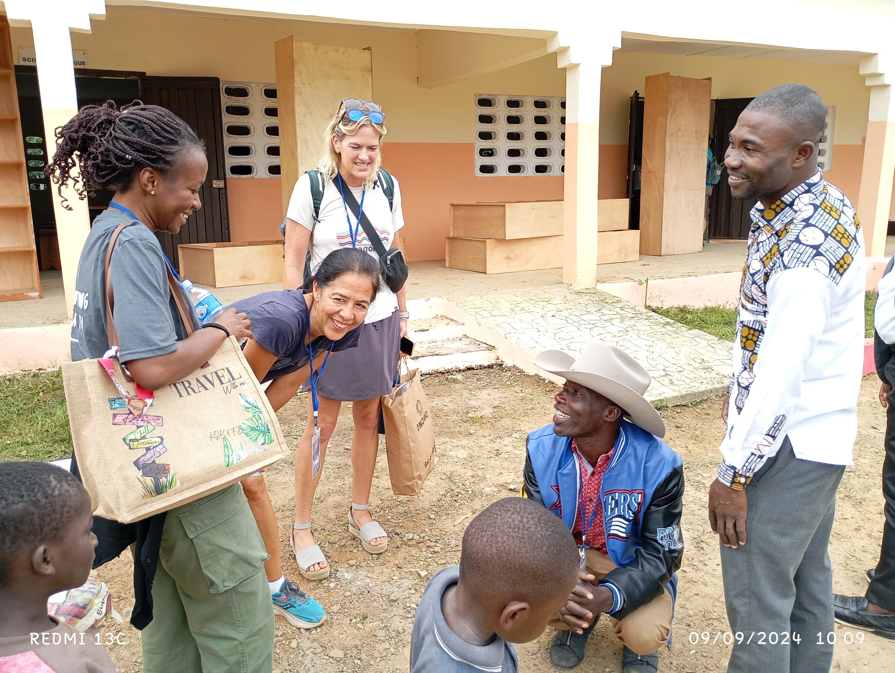

Our Programs
Ann Nielsen Private College of Excellence offers a variety of programs designed to foster academic excellence and personal growth. Our curriculum is carefully crafted to meet the diverse needs of our students and prepare them for future success.
- Primary Education: A foundational program focusing on core subjects and developing essential learning skills.
- Secondary Education: Comprehensive academic pathways leading to higher education opportunities.
- Specialized Programs: Tailored programs in areas such as arts, sciences, and technology, providing in-depth knowledge and skills.
- Extracurricular Activities: A wide range of clubs, sports, and cultural activities to enrich the student experience.
We are committed to providing a well-rounded education that not only focuses on academic achievement but also nurtures creativity, critical thinking, and social responsibility.

Our Pedagogical Approach
At Ann Nielsen Private College of Excellence, we believe in a student-centered pedagogical approach that emphasizes active learning, critical thinking, and collaboration. Our teaching methodologies are designed to:
- Encourage Active Participation: Through interactive lessons, discussions, and hands-on activities.
- Foster Critical Thinking: By promoting problem-solving, analysis, and evaluation skills.
- Promote Collaboration: Through group projects, peer learning, and teamwork.
- Provide Individualized Support: Recognizing the unique learning styles and needs of each student.
- Integrate Technology: Utilizing modern tools and resources to enhance the learning experience.
Our goal is to create a stimulating and supportive learning environment where students are empowered to reach their full potential.

Our Dedicated Teaching Staff
Our team of experienced and passionate educators is the cornerstone of Ann Nielsen Private College of Excellence. We are committed to providing high-quality instruction and personalized guidance to our students.
Anice KOUADIO
Subject:Director of Studies
A dedicated educator and visionary leader, Anice Kouadio brings over 15 years of experience in teaching and academic management. Holding a Master's degree in Educational Sciences and trained in innovative methodologies, he began his career as a french teacher before successfully leading high-impact educational projects.

External patnership
Subject: Emphasizing the opportunity and openness
Open the doors to a world of possibilities! Thanks to our dedicated external partners, English is coming to your school life... online and for free! A unique chance to enrich your journey and master the language of tomorrow.
.jpg)
staff teachers with the founder
Subject:The Strength of Teamwork
Through regular meetings, we collaborate to analyze, strategize, and make impactful decisions. This collective approach helps us refine teaching techniques, address individual learning needs, and implement customized solutions.
Our faculty members are not only experts in their respective fields but also dedicated mentors who are invested in the success of each student. We encourage open communication and collaboration between students and teachers.